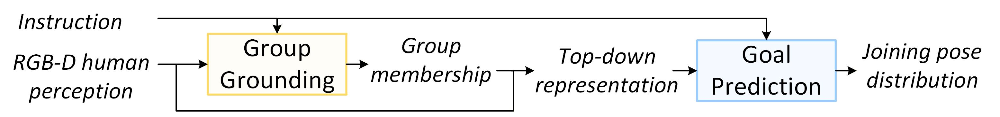
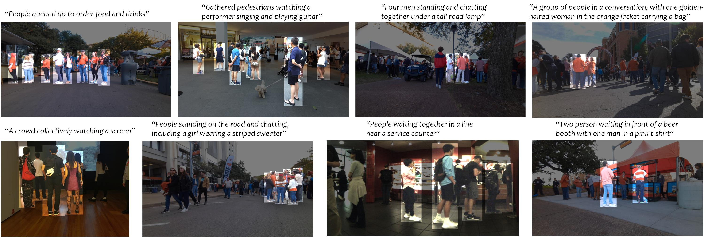
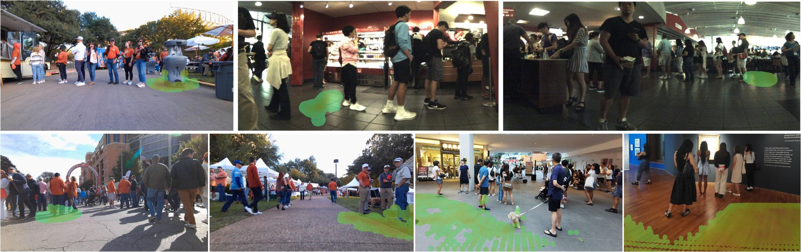

Where Should I Join?
Robot Group Joining via Language-Guided Goal Prediction
Abstract
Social navigation typically assumes a specified goal and focuses on reaching it while respecting social conventions, whereas robot group joining requires predicting where to join based on the group's real-time activity and formation. This is a highly semantic task, yet an important capability for applications such as robotic guide dogs and autonomous mobility scooters.
We formulate language-grounded robot group joining: given an observation and a natural-language description of a target group, the robot identifies the relevant group members and predicts socially compliant joining poses. For grounding, we generate structured candidate subsets through recursive spectral partitioning and rank them with a language-conditioned image–geometry model. Given the grounded group, a goal predictor leverages human-formation priors to produce a multimodal energy–orientation map over feasible robot poses.
Experiments on conversations, queues, and audiences across varying group sizes, crowd densities, and visual ambiguities show that our method achieves competitive grounding accuracy with sub-second inference and outperforms all baselines in joining-pose prediction. Real-robot experiments further demonstrate group joining in both static and dynamically changing interactions.
Video
Two-stage Pipeline

Group Grounding: Identify the task-relevant subset of observed people corresponding to the language instruction. We generate structured candidate subsets through divisive spectral clustering and rank them with a model trained via pairwise comparison.

Goal Prediction: Generate an energy–orientation map over valid joining poses using a top-down representation encoding group membership and human poses.

Baseline Comparisons
BibTeX